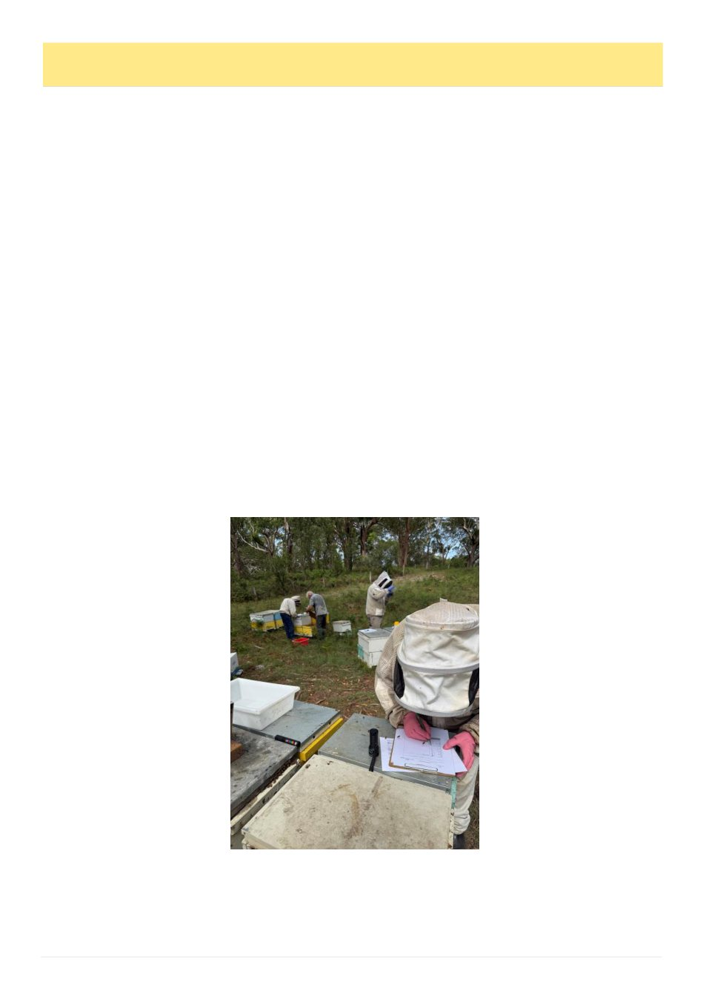

34
Australian Bee Journal
Victorian Beekeepers As Part Of The Solution, cont’d
beekeepers could contribute observations, assessment
colonies, genetic diversity and volunteers. Researchers
could support methods and data, while apiary hosts
could provide genuine Victorian test environments.
Clear rules would be needed around participation,
use of genetics and data, recognition of contributors,
conflicts, costs, biosecurity and exit to name but a few.
No person, business or sector should be able to own the
network. However, none of these are reasons to wait.
They, and more, are the work required to earn trust -
started through conversations, and built through action.
What the VAA is being asked to consider
The VAA‘s purpose is to advance apiculture and the
interests of Victorian apiarists. Stewardship of the
VBRN fits squarely within that purpose. Discussions
are underway with the Board, and a decision on the As-
sociation‘s role is expected in August.
The question before the Board is not whether to ap-
prove a finished concept. It is whether the VAA should
provide the VBRN a home, authorise a controlled es-
tablishment and consultation phase, then bring detailed
arrangements back for a later decision. Breeding, as-
sessment and research would remain with those
equipped to do it.
This is not a new idea for the VAA, it already brings
government and industry together through working
groups and action plans. Genetic improvement is an-
other part of the same industry resilience challenge; one
no individual beekeeper, club,
organisation or business can re-
solve alone.
Exploring stewardship does
not create a separate entity or
approve
expenditure,
deliver
commercial queen production,
certification, funding commit-
ments or final genetics and data
rules. It would allow the Associ-
ation to consult and test whether
there is enough support and ca-
pability to proceed with such an
initiative.
A discussion for Victorian bee-
keepers
A VBRN will succeed only if
it is useful to the people doing
the work. It must be designed
with breeders and beekeepers,
with legitimate concerns treated
as part of the design. Victorian
beekeepers
should
consider
where their stock, experience,
apiary, observations or technical
capability might contribute.
Some lines and methods may
fail. That is part of the work.
Genetic improvement is meas-
ured in generations, not media or
ABJ cycles. A network alone
cannot guarantee results, but it
can help retain useful work and keep pushing forward
when funding, organisations or people change.
Our responsibility is not just to get through varroa,
but to leave Victorian apiculture stronger than we found
it. That is why I am putting the VBRN to the commu-
nity and Board for discussion. It cannot be designed
and realised by one person or in one room. It must be
tested against the experience and practical needs of
those who may contribute to it and rely on it. If the
need is shared and there is a willingness to build it, then
let‘s get after it. The real test is whether it proves use-
ful, outlasts the next project or change in leadership
and, in time, passes to the next generation of Victorian
beekeepers.
Sources and further reading
AgriFutures Australia, National Honey Bee Breed-
AgriFutures Australia, Honey Bee Genetic Improve-
ment Program (Plan Bee), Publication 25-007 (2025)
AgEcon Plus, Queen Sector Analysis Report: Size
and Scope of the Australian Queen Bee Industry (2025)
AHBIC, CEO Report July 2026 - Honey Bee Indus-
AHBIC, Industry Levies - current settings and pro-
VAA President's Report - strategic roadmap, chemi-
cals and public-land resources context
AgriFutures Australia, Best in
the West: Improving the genet-
Don Keith and Laurie Dewar,
Australian Queen Bee Breeders'
European
Commission,
Rodríguez Luis et al., Recap-
iour in Cuba, Scientific Reports
Le Conte et al., Geographical
Resistant to Varroa destructor
Thomas D. Seeley, Darwinian
Randy Oliver, Selective Breed-
(Continued from page 33)
Standardised assessments, benchmarking
and records are critical for the success of
any breeding effort. The VBRN proposes
to offer Victorians a structure for this that
is larger and mre enduring than what one
beekeeper, collective or operation can
provide. New Castle, 2026